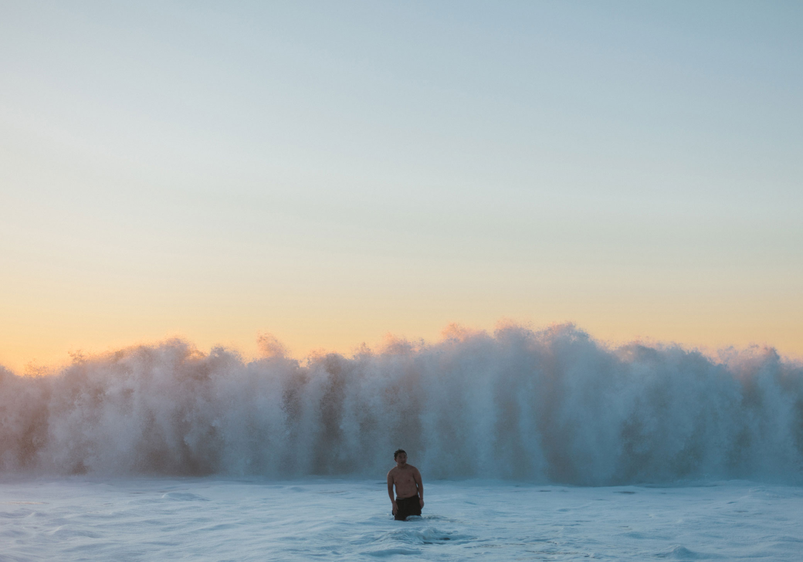
Baker Beach, San Francisco
Amy Harrity
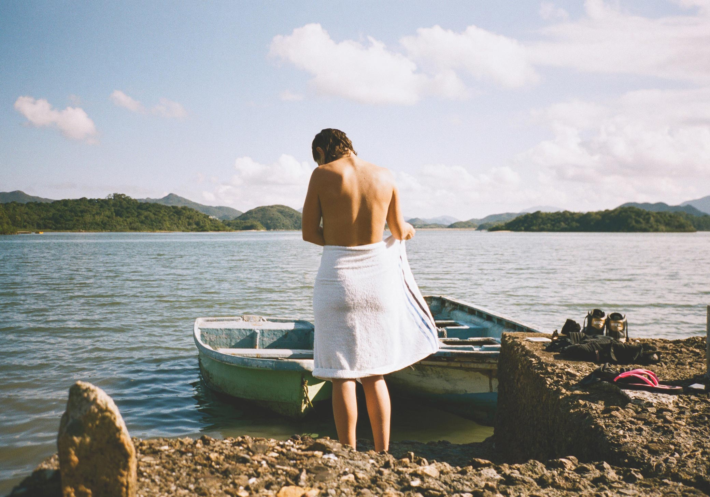
Sai Kung, China
Magda Wosinska
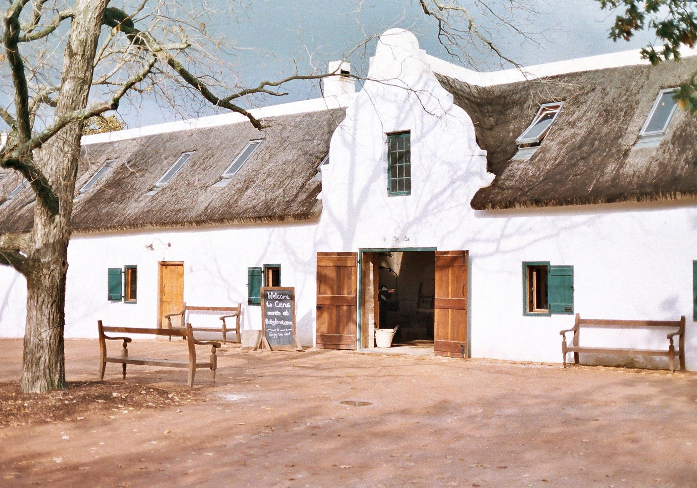
Babylonstoren farm in Western Cape, South Africa
Alexander Seth Hughes
Storrs, Connecticut
Rachel Hulin
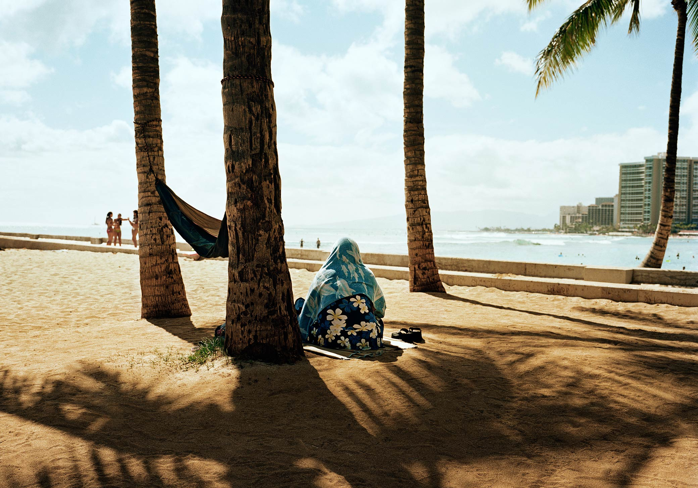
Honolulu, Hawaii
Emily Shur
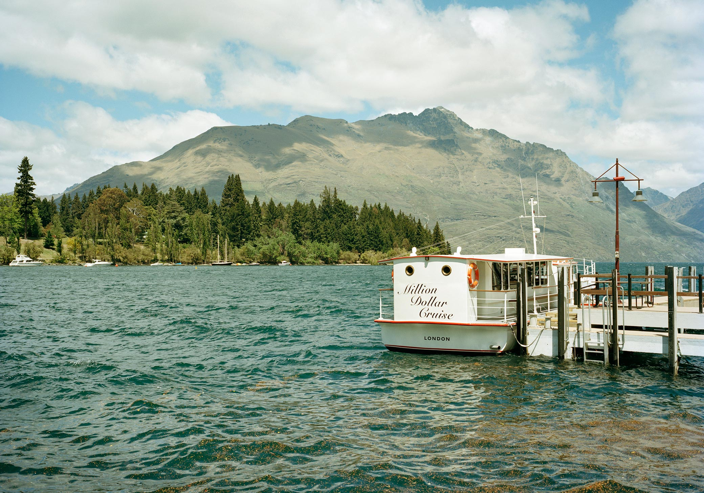
Queenstown, New Zealand
Emily Shur
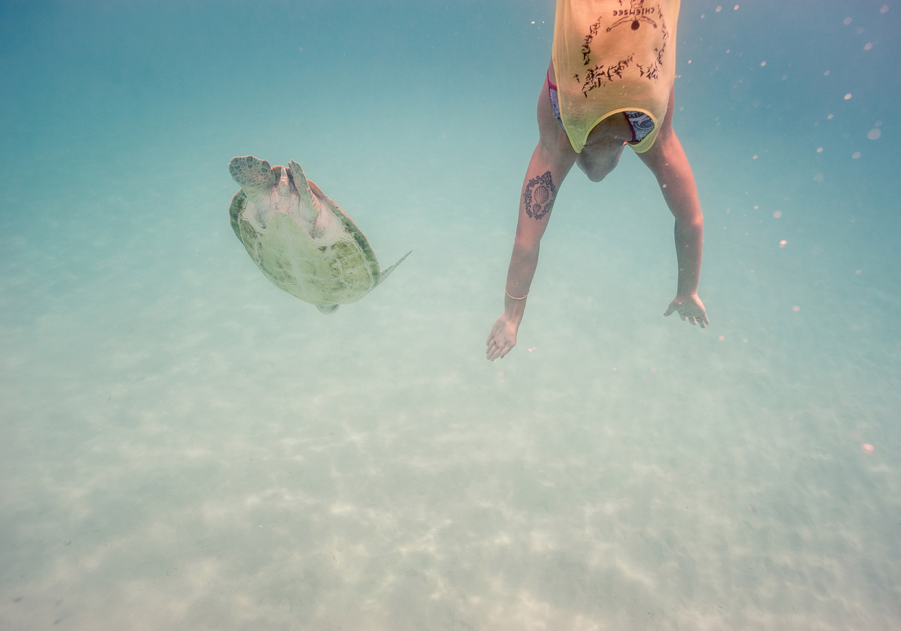
Sailing from Bridgetown, Barbados
Christian Brecheis
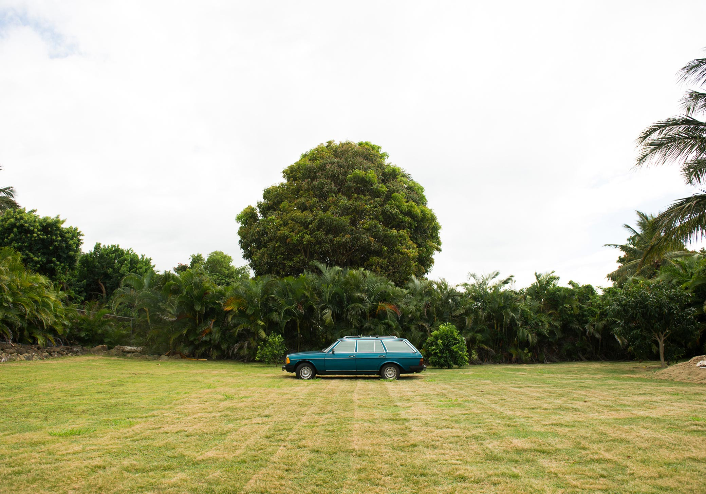
North Shore, Oahu, Hawaii
Ashley Camper
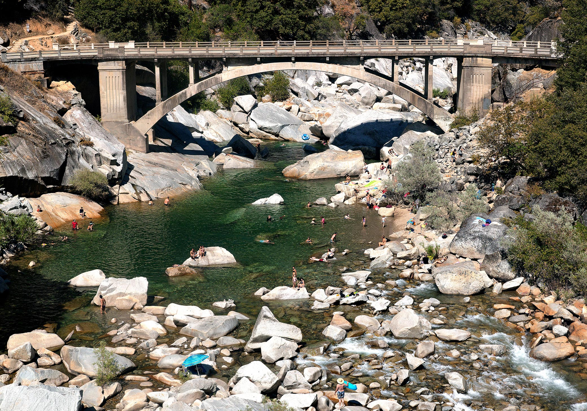
Nevada City, California
Terri Loewenthal
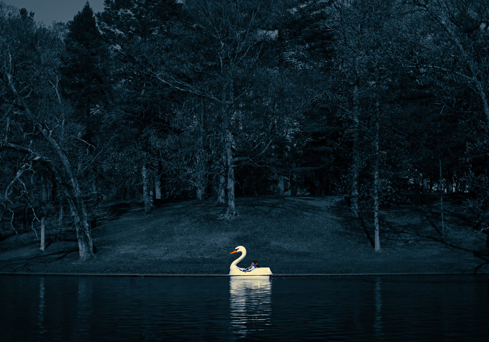
Roger Williams Park in Providence, Rhode Island
Rachel Hulin
Lewis and Clark Trail, South Dakota
Rachel Roberts
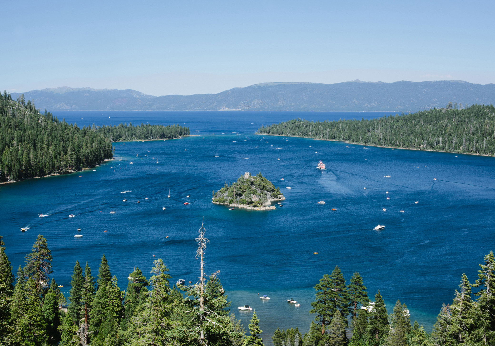
Emerald Bay in Lake Tahoe, California
Amy Harrity
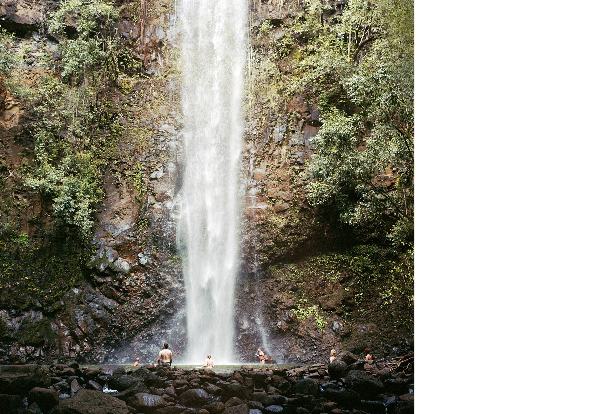
Kauai, Hawaii
Terri Loewenthal
Punta Gorda, Belize
Aya Brackett
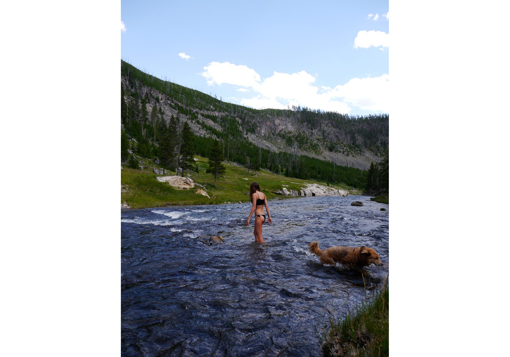
Yellowstone National Park, Wyoming
Rachel Roberts
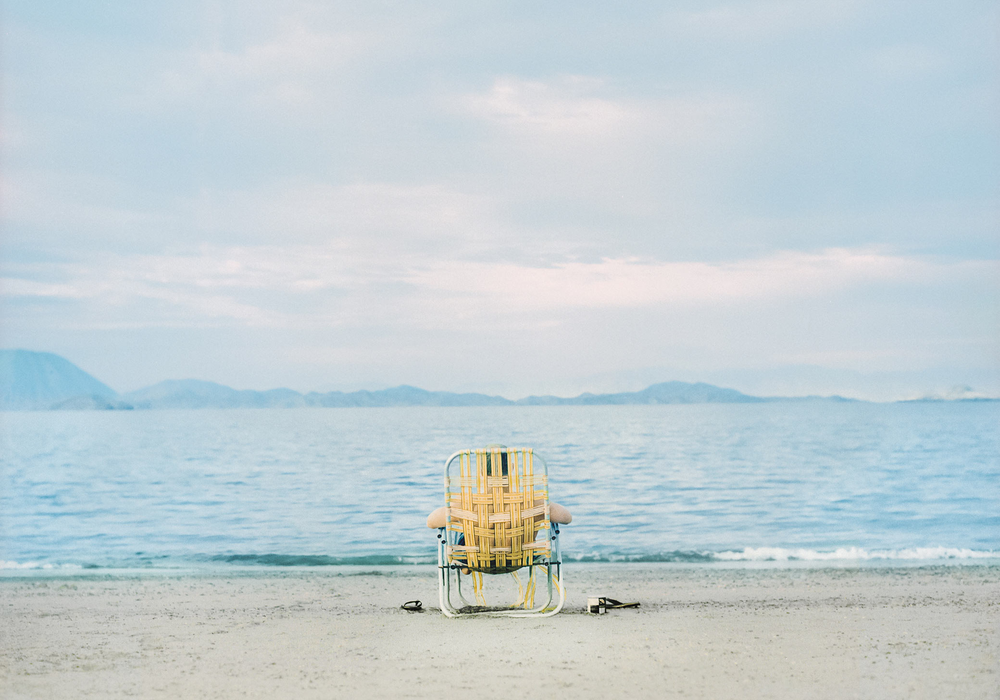
Sea of Cortez, Baja California
Mark Gordon
Mojave Desert, California
Collin Erie
Phi Phi Leh, Thailand
Collin Erie
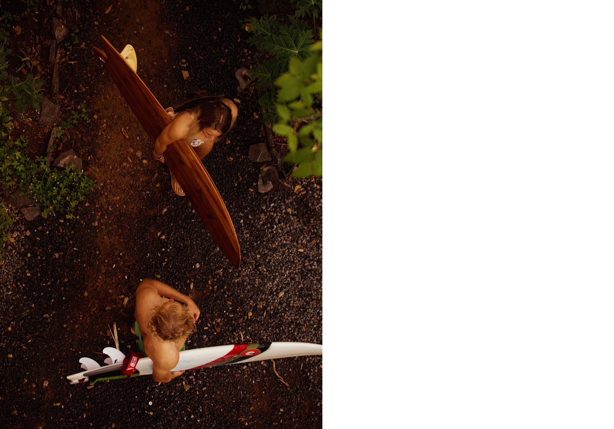
San Juan del Sur, Nicaragua
Justin Ruhl